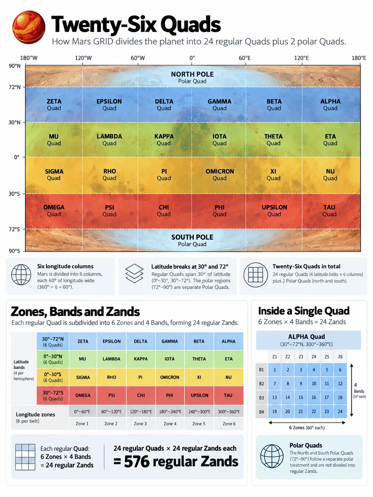

Twenty-Six Pieces of Mars
Quads, Belts and Zones
Twenty-six is not an obvious number of ways to divide a planet.
Twenty-four would look tidier. Thirty has attractive factors. Thirty-two would appeal to anyone with a weakness for binary structures. GRID ends up with twenty-six Quads because the number was not chosen first and defended afterwards. It falls out of three decisions: where the major latitude breaks belong, how many broad longitude divisions remain useful for planetary orientation, and what to do when ordinary longitude geometry reaches the poles.
Twenty-four Quads cover the regular part of Mars.
Two more cover the poles.
The interesting part is how the geometry produces them.
From the equator to the polar caps
The easiest major boundary is the equator. It already has physical meaning, belongs naturally to Martian coordinates and divides the planet cleanly into north and south. There is little reason for a civil geography tied closely to latitude and longitude to invent a different primary division simply for the pleasure of being original.
The less obvious boundaries are 30° and 72°.
Together, the three latitudes create six broad regions:
72–90°N — North Polar
30–72°N — Northern Mid
0–30°N — Northern Low
0–30°S — Southern Low
30–72°S — Southern Mid
72–90°S — South Polar
The regular part therefore has an intentional asymmetry. Low-latitude regions are 30° high, while mid-latitude regions are 42° high.
On a rectangular map that looks slightly untidy.
On a round planet it makes considerably more sense.
GRID’s regular latitude structure is built from 6° Bands. Five Bands fit between the equator and 30°. Seven fit between 30° and 72°:
Low latitude: 5 × 6° = 30°
Mid latitude: 7 × 6° = 42°
The unequal angular heights compensate for some of the physical contraction of longitude as latitude increases. Using the reference geometry employed in the GRID design, a 60°-wide Quad from the equator to 30° covers roughly 6.0 million square kilometres; one from 30° to 72° covers about 5.4 million.
They are not equal-area units.
They are not intended to be.
What matters is that the two types of Quad remain in broadly the same physical class rather than becoming dramatically different simply because one sits farther from the equator.
This is a recurring GRID trade: sacrifice a little angular symmetry to preserve more useful physical scale.
Why 30° and 72°?
The 30° break has both geometric and operational logic.
During the original design work, the northern latitudes from roughly 30° to 48° were treated as an important candidate region for early settlement. That is not a prediction that future Martians will concentrate there. It is a founding-era design assumption about a region likely to place relatively heavy demands on civil geography.
The 6° Band structure treats that corridor neatly:
30–36°
36–42°
42–48°
It therefore receives three full north–south divisions while remaining entirely inside the same 30–72° mid-latitude regime. Within any one longitude column, substantial settlement can spread through those latitudes without repeatedly crossing the largest regular GRID boundary.
That consideration helped choose 30° rather than a mathematically more obvious alternative. The low-latitude Quads became five Bands high; the mid-latitude Quads seven. The resulting areas remained broadly comparable, while an important candidate settlement region received useful internal granularity.
The 72° break solves a different problem.
Chapter 8 showed what happens to fixed longitude divisions as they approach a pole. By 72°, one degree of longitude has contracted to less than a third of its equatorial width. Continuing the ordinary rectangular structure much farther would progressively undermine the physical scale that the hierarchy is supposed to represent.
So GRID changes geometric regime at 72°.
The number has a useful structural consequence as well. From the equator to 72° there are exactly twelve 6° Bands in each hemisphere. North and south together therefore give:
24 regular latitude Bands
The final 18° at each end of the planet belongs to the polar regime.
The numerical neatness is welcome. It is not the reason for the boundary. The geometry is.
Four Belts and six columns

Read a description of this illustration
The source graphic correctly shows polar Quads and four regular latitude Belts, but its lower explanatory Zand tables incorrectly assume identical six-by-four subdivisions in every Quad. The correct regular construction is four 15-degree Zones by five or seven 6-degree Bands.
The four non-polar latitude regions are grouped as Belts:
Northern Mid (Blue Belt)
Northern Low (Green Belt)
Southern Low (Gold Belt)
Southern Mid (Red Belt)
A Belt is useful shorthand for a broad latitude regime. It is not another compulsory rung in the canonical GRID path, which remains:
Quad → Zand → Province → Sector → Tile → Click
That distinction keeps the hierarchy lean. Belts help describe the planet without making every spatial identifier longer.
Each Belt is then divided longitudinally into six 60° columns.
Six is a useful number at this scale. It makes each Quad narrow enough for saying which one contains a location to improve planetary orientation substantially, while avoiding a top level crowded with dozens of regions. More importantly, 60° nests perfectly into the finer longitudinal structure beneath it.
Every regular Quad contains exactly four 15° Zones:
60° = 4 × 15°
The large geography and the working grid therefore share boundaries rather than cutting awkwardly across one another.
Four Belts multiplied by six Quads gives:
4 × 6 = 24 regular Quads
Then the polar caps contribute one Quad each:
24 regular + 2 polar = 26 Quads
Twenty-six looks less peculiar once the construction is visible. The regular planet naturally produces twenty-four. The poles are physically different, so they get two different top-level pieces.
The alternative would be to force six longitude-shaped Quads around each pole merely to preserve numerical symmetry. That would make the top of the hierarchy inherit exactly the geometric problem the polar regime exists to manage.
One polar cap is one Quad.
That is simpler and more honest.
Zones, Bands and Zands
Quads make Mars graspable at the largest scale. The systematic grid underneath begins with two finer axes.
Longitude is divided into 24 Zones, each 15° wide, proceeding eastward around the planet. Four Zones fit inside every regular 60° Quad.
Latitude, between 72° south and 72° north, is divided into 24 Bands, each 6° high: twelve north of the equator and twelve south.
Where a Zone intersects a Band, GRID creates a Zand. (i.e. a Zone-Band)
That gives the regular part of Mars:
24 Zones × 24 Bands = 576 regular Zands
The attraction is not simply that 24 × 24 looks pleasing. The structure nests.
A low-latitude Quad contains four Zones across and five Bands vertically:
4 × 5 = 20 Zands
A mid-latitude Quad contains the same four Zones but seven Bands:
4 × 7 = 28 Zands
The two Quad types therefore contain different numbers of Zands.
That is intentional.
Forcing them to contain the same number would require either abandoning the useful 30°/42° macrostructure or changing Band height between latitude regimes. GRID instead keeps the working Band structure constant and allows the broad Quads to contain whatever number follows naturally from their geometry.
The hierarchy serves the planet rather than demanding that the planet produce prettier multiplication tables.
There is also a useful human quality to the 24-Zone structure. Twenty-four pieces around a full rotation are familiar enough to be mentally manageable, and they give substantially finer east–west context than the six 60° Quad columns. That resemblance to the twenty-four-hour division of a rotating world may make the structure easier to remember, but GRID does not turn the Zones into Martian time zones. A future timekeeping system can align with them if useful, or ignore them entirely.
The geometry provides compatibility.
It does not issue instructions to the future.
The polar Zands
The rectangular 24 × 24 matrix ends at ±72°.
The Zand level does not.
Each polar Quad still uses the same twenty-four 15° longitude positions around Mars, producing 24 wedge-shaped polar Zands in the north and another 24 in the south.
Globally, GRID therefore contains:
576 regular Zands + 48 polar Zands = 624 Zands
At this level, that is almost everything we need to know about polar geometry.
The North Polar Quad covers 72°N to 90°N.
The South Polar Quad covers 72°S to 90°S.
Each contains twenty-four Zands aligned with the global Zone positions. Farther down the hierarchy, the east–west subdivision begins adapting as the meridians converge. Exactly how that works belongs to Chapter 13.
The useful point here is architectural: polar Mars joins the same hierarchy at Zand level without pretending that the regular rectangular geometry can continue unchanged all the way to the apex.
Regular and polar Mars therefore look different locally but still belong to one global structure.
A planetary structure you can remember
The top of GRID can now be reduced to a small mental model.
There are two polar Quads.
Between them sit four regular Belts.
Each Belt contains six 60° Quads.
Across the regular planet run 24 Zones and 24 Bands.
Their intersections create 576 regular Zands.
The poles add another 48 (24 each), giving 624 globally.
The point is not the elegance of the arithmetic. It is that each number comes from a recognisable design choice.
The equator gives the planet a natural centre. The 30° break helps low- and mid-latitude Quads remain physically comparable while giving useful granularity to an important candidate settlement corridor. The 72° boundary marks the point where ordinary longitude subdivision is no longer the right operating geometry. Six 60° columns keep the broad regions memorable while nesting exactly into 15° Zones.
The resulting structure is not perfectly symmetrical.
It is more useful for not being so.
Quads make Mars understandable at planetary scale.
Zands turn that broad geography into a systematic grid.
Below Zand, the hierarchy starts its real descent.